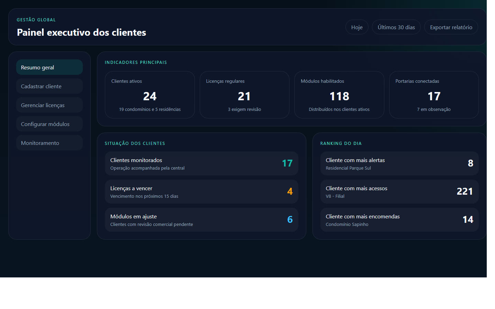
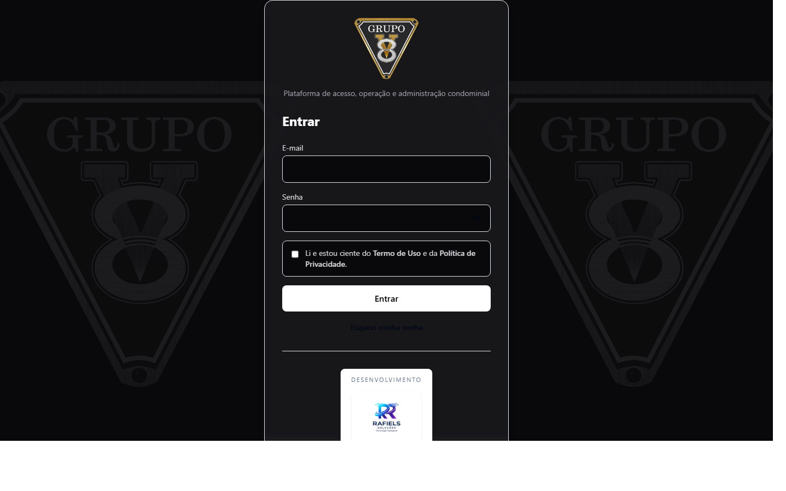
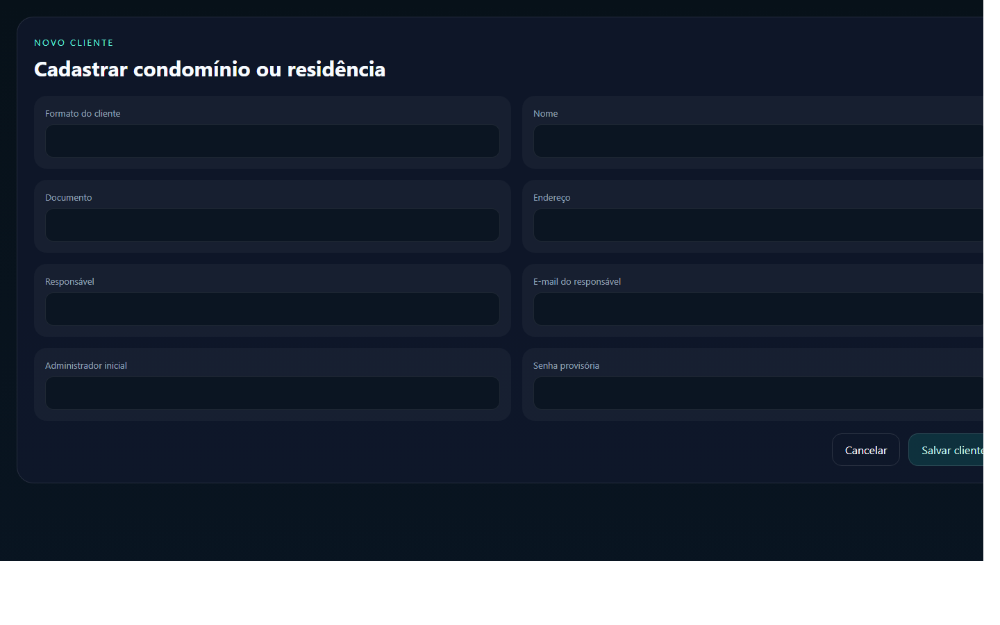

Manual do Usuário Master
Portaria Web
Versão: 1.0
Data: 23/04/2026
Este manual foi preparado para orientar o uso do perfil Master de forma simples, prática e direta.
1. Visão geral
O perfil Master é responsável pela gestão global da plataforma. Nele ficam concentradas as ações de cadastro de clientes, revisão de licenças, ativação de módulos e visão executiva da operação.
Com esse perfil, você consegue:
- acompanhar o painel geral dos clientes
- cadastrar novos clientes
- revisar situação comercial
- habilitar ou desabilitar módulos
- acompanhar a situação operacional consolidada
Imagem 1
Adicionar captura do painel Master aqui.
Arquivo sugerido:
docs/manual-usuario/imagens/master-01-dashboard.png

2. Como entrar no sistema
1. Abra o navegador.
2. Acesse o endereço do sistema.
3. Informe seu e-mail.
4. Informe sua senha.
5. Clique em Entrar.
Se o acesso estiver correto, o sistema abrirá o painel Master.
Imagem 2
Adicionar captura da tela de login aqui.
Arquivo sugerido:
docs/manual-usuario/imagens/master-02-login.png

3. O que cada área faz
Resumo geral
Mostra os números principais da plataforma, com indicadores de clientes, licenças, módulos e monitoramento.
Cadastrar cliente
Permite criar um novo condomínio ou residência, preenchendo os dados principais e criando o administrador inicial.
Gerenciar licenças
Permite revisar plano, valor, vencimento, status e período de vigência.
Configurar módulos
Permite definir quais recursos estarão ativos para cada cliente.
Monitoramento
Mostra uma visão central das operações acompanhadas.
4. Passo a passo das tarefas principais
4.1. Consultar o painel geral
1. Entre no sistema.
2. Aguarde o carregamento do painel.
3. Observe os indicadores principais.
4. Clique no card desejado para abrir a área correspondente.
4.2. Cadastrar um novo cliente
1. Abra a área Cadastrar cliente.
2. Escolha se o cadastro será de condomínio ou residência.
3. Preencha os dados principais.
4. Informe os dados do responsável.
5. Informe os dados do usuário administrador inicial.
6. Clique em Salvar.
Imagem 3
Adicionar captura da tela de cadastro de cliente aqui.
Arquivo sugerido:
docs/manual-usuario/imagens/master-03-cadastro-cliente.png

4.3. Atualizar licença
1. Abra a área Gerenciar licenças.
2. Localize o cliente desejado.
3. Atualize plano, valor, vencimento e situação.
4. Confirme a alteração.
4.4. Atualizar módulos
1. Abra a área Configurar módulos.
2. Busque o cliente desejado.
3. Marque ou desmarque os módulos que devem ficar ativos.
4. Confirme a alteração.
5. Revise a mensalidade quando houver mudança de escopo.
5. Boas práticas
- revise os dados do cliente antes de salvar
- confirme sempre o vencimento e o valor da licença
- ao alterar módulos, revise impacto comercial
- use o painel geral para acompanhar o que exige ação rápida
6. Dúvidas comuns
Quando devo usar o Master?
Quando a ação for global, comercial, contratual ou de configuração geral do cliente.
Quem usa o Master?
Normalmente a equipe central, gestão comercial, implantação ou supervisão do produto.
O Master altera dados operacionais do condomínio?
Pode alterar configurações que impactam a operação, mas o uso diário do condomínio fica concentrado no perfil Admin.
7. Anexos
- Imagem 1: painel Master
- Imagem 2: login
- Imagem 3: cadastro de cliente